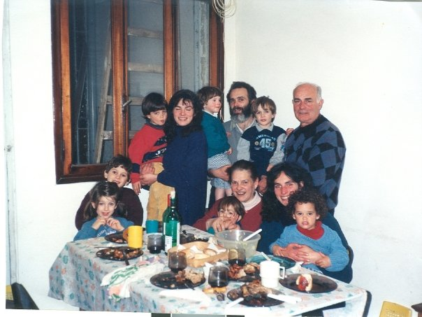
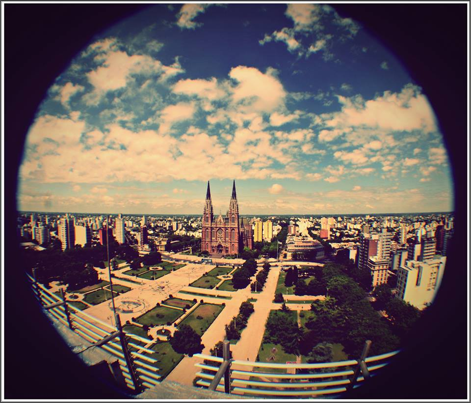

Where I come from....
I was born in La Plata, Argentina.
Where I grow up with my mum and dad, and my three brothers.
During primary school, I attended school in the morning and art school in the afternoons, and by 4th grade, I knew that I really like music.
I started to study flute, but I had to drop it when I started high school, I was too cool and with all the dating and partying with my friends I didn't have enough time for music.
When I finished high school, I try different careers but I couldn't find what was right for me, and by the age of 23 I moved abroad.
Family
In Argentina, family is very important. Every night we coordinate our schedules, to have dinner toghether and tell each others how was our day.
And every Sunday, we gather in my granparents with my cusings to have a family lunch that could be barbacue or homemade pasta.
La Plata
My hometown is a city that was planned before builded. It's a perfect square and it has an avenue and a park every 6 blocks.
It's known as the diagonal city, as it also has diagonals crossing the city, that are very helpfull to cut distnces, but they'll get you lost if you are not use to them.
La Plata
My hometown is a city that was planned before builded. It's a perfect square and it has an avenue and a park every 6 blocks.
It's known as the diagonal city, as it also has diagonals crossing the city, that are very helpfull to cut distnces, but they'll get you lost if you are not use to them.